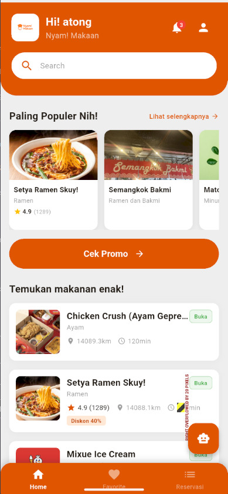
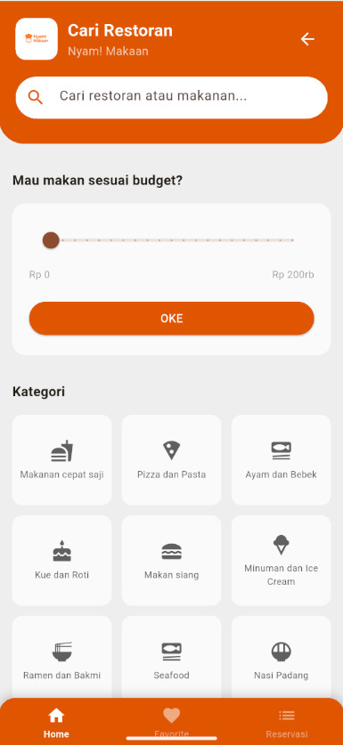
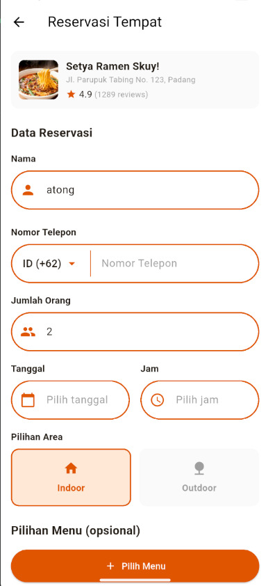
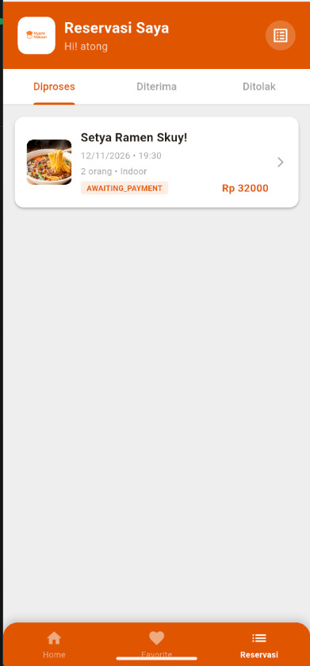

Sesuaikan budget
Cari restoran dengan anggaranmu.
PANDUAN APLIKASI NYAM! MAKAN
Kenali Nyam! Makan, teman cari kuliner sesuai selera dan kantongmu. Temukan resto pilihan, pilih menu sesuai reservasi dalam satu aplikasi.
Mau makan apa hari ini?
Pilihan makanan enak!
Mau makan sesuai budget?
Pilih kategori favorit
Cari restoran dengan anggaranmu.
Filter jenis makanan favoritmu.
Pilih restoran dengan ulasan terbaik.
KENALI FITURNYA
Semua yang kamu butuhkan untuk memesan dan memilih resto, dalam satu tempat yang jelas, cepat, dan aplikatif.
Masukkan anggaran maksimal dan temukan pilihan yang tepat tanpa ribet.
Dari ayam dan bebek hingga desa, variasi makanan dan restoran tersedia.
Lihat penawaran yang tersedia dari promo di resto, rekomendasi pilihan nikmat.
Tandai resto yang kamu sukai agar mudah ditemukan kembali kapan saja.
Pilih waktu, jumlah orang, dan catat kebutuhan khusus pada reservasi.
Lihat pengalaman pengguna dan bagikan pengalamanmu sendiri.
CARA PAKAI
Daftar atau langsung masuk menggunakan akunmu.
Cari lewat kategori, nama, atau sesuai budget.
Baca detail resto, lihat menu, promo, dan ulasan.
Isi detail kunjungan, lalu pantau status reservasi di aplikasi.
TAMPILAN APLIKASI
Ui yang familiar, dan memberi kuliner cukup kemudahan reservasi.

Mulai dari cari promo.

Tentukan pilihan sesuai.

Nikmati hari sesuai.

Pantau pesanan di sini.
PANDUAN BERDASARKAN PERAN
Temukan tempat makanmu.
Kelola resto dengan lebih rapi.
ADA PERTANYAAN?
Hal penting sebelum kamu mulai menemukan tempat makan.
Buka pencarian, pilih rentang budgetmu, lalu aplikasikan filter selera dan lokasi.
Beberapa restoran menerima otomatis, sementara yang lain memerlukan konfirmasi dari pemilik resto.
Masuk sebagai pemilik resto, lengkapi profil bisnis, dan unggah menu beserta informasi penting.
Cari yang pas, datangkan pilihan yang pas untukmu. Nyam! Makan bantu kamu menemukan pilihan.